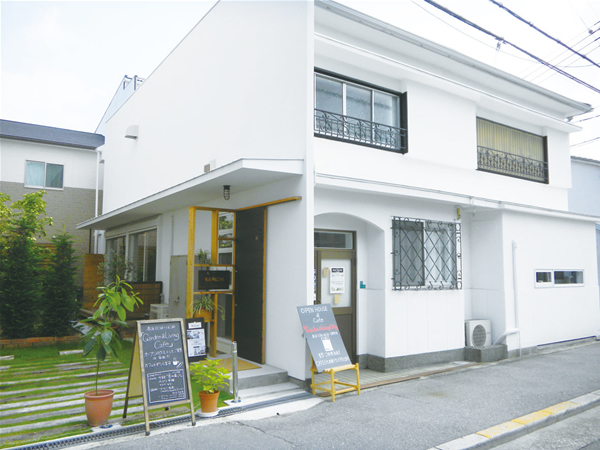

【告知】
「KATACHI」初の特別ジョイント営業です。通常より遅い時間（20：00）までオープンします。 ★「ネリKitchen」 ★「セトコーヒー」 ★「ごっくんロウル」 ★「TANA」 ★「KATACHI」 千林の人気パン工房「壱の屋」さんのパン各種、ラスク、クッキーなどイートイン・テイクアウトOK ‥‥‥‥‥‥‥‥‥‥‥‥‥‥‥‥‥‥‥‥‥‥‥‥‥‥‥‥‥‥‥‥‥‥‥‥‥‥‥‥‥‥‥‥‥‥ Cafe ＆ Gallarey ＫＡＴＡＣＨＩ |
|
「こんなライフスタイルで暮らした」 「こんな、家づくりをしたい」といった、お客様の想いを最大限に反映させるために、何度も繰り返し、打ち合わせを重ねていきます。 それは木村工務店では家づくりを「お客様と私たちとの協働作業」と考えているからです。お客様の想いを叶えるため、木村工務店では、家づくりをお客様に、明確にご理解いただくため、 「９つのステップ」に分けて、打ち合わせを進めてまいります。 まず「１．相談会」を設けております。ここで土地のことや希望予算など、要望事項を実際にお会いしてお伺いします。それに基づき計画案・概算見積書を作成し、具体的に提案させていただくのが「２．計画・予算」です。ここまでは無料です。 プランと概算見積の合意が得られれば、「３．設計契約」を経て、「４．実施設計」 へと進みます。ここから模型の製作なども交えながら、より具体的な設計図面や確認申請図の作成にはいります。打ち合わせを何度も繰り返して図面が出来上がると、「５．見積」をします。コストパフォーマンスを踏まえた見積調整をするための打ち合わせもします。 設計図と見積書の合意を得て「６．工事請負契約」となります。いよいよ工事着工です。工事中は安心できる家づくりのために、「７．現場監督を中心とした お客様との定例打ち合わせ」を設けております。職人さんに「仕事」をしても らうための事前打ち合わせです。現場監督は、お客様と設計者と職人の間に入ってコミュニケーションをとりながら現場を見守ります。打ち合わせ通りの施工が出来ているかどうか、お客様も現場に来て、「８.職人による施工を見守っ てください。」施工上の気付いた点があれば、現場監督を通じて、質問をして下 さい。工事中の細やかな修正も大切な作業です。 ようやく最後の「施主確認」と「手直し」を経て、「９.お引渡し」です。 「家」は住みながら完成されていくものかもしれません。手作りの家では、住まい後も気付く点があるでしょう。現場監督と設計者と職人が連携をとりながら対応していきます。 木村工務店では親切丁寧につくることを心がけながら、お客様との密なコミュニケーションを築くことが家づくりの根幹であると考えています。 |